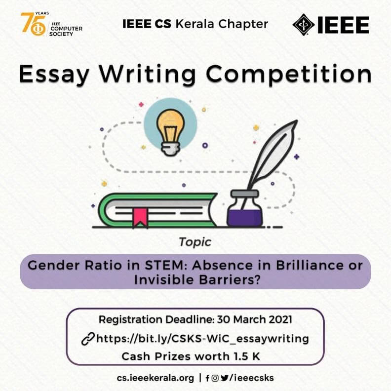
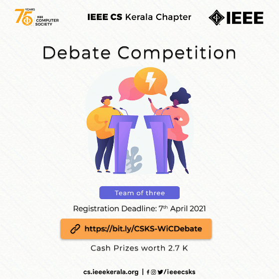
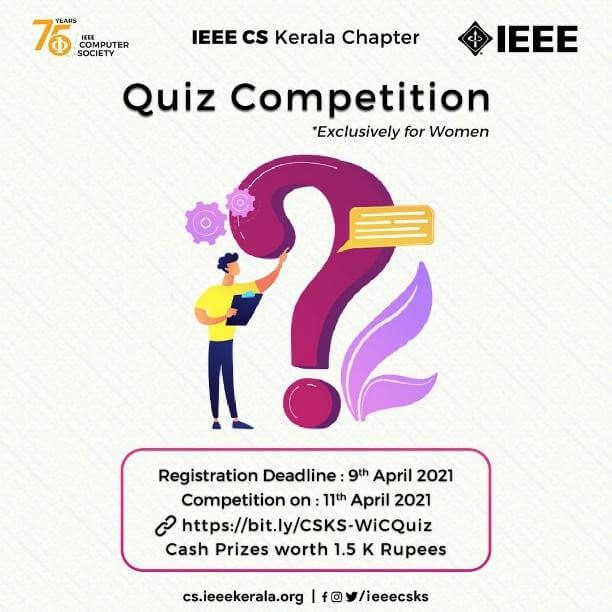
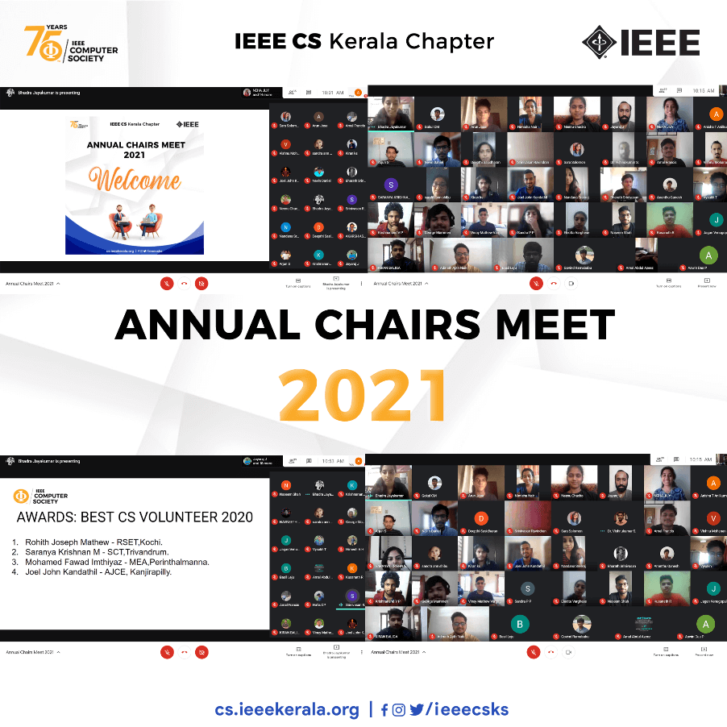
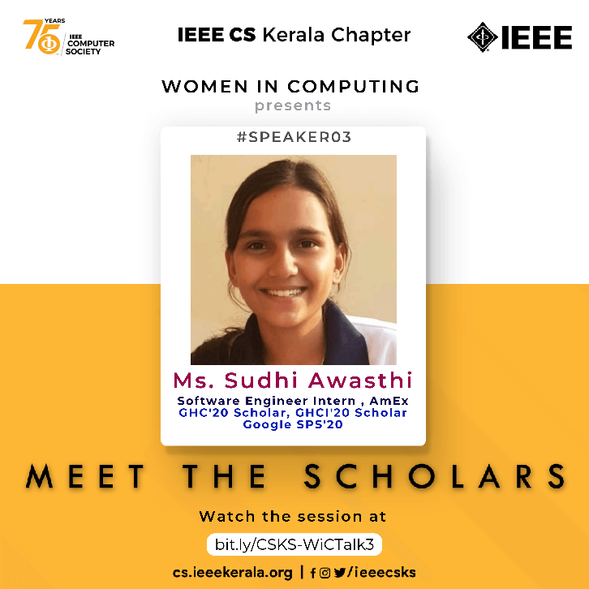
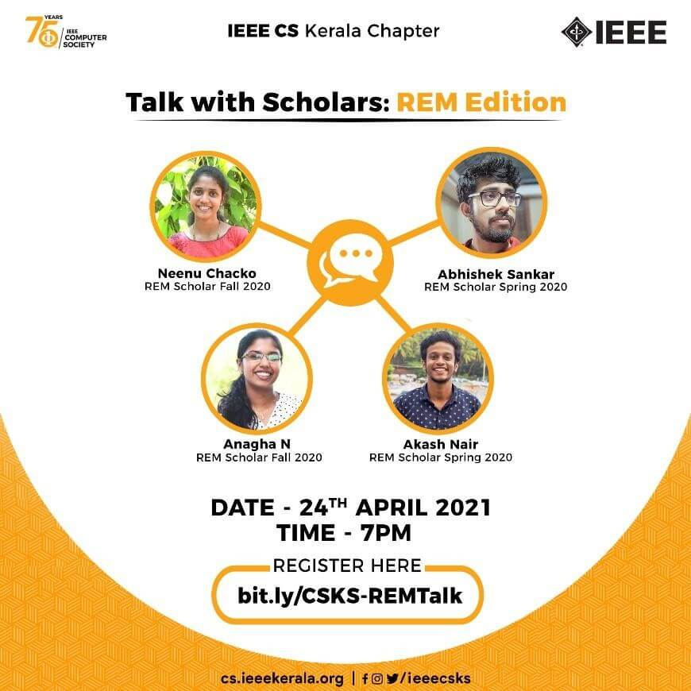
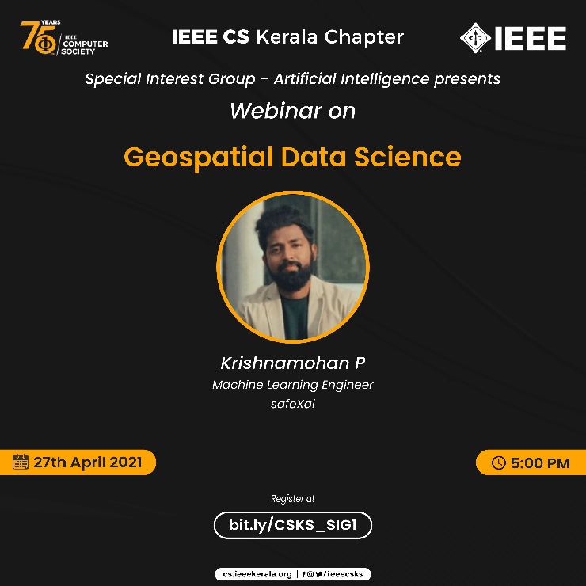
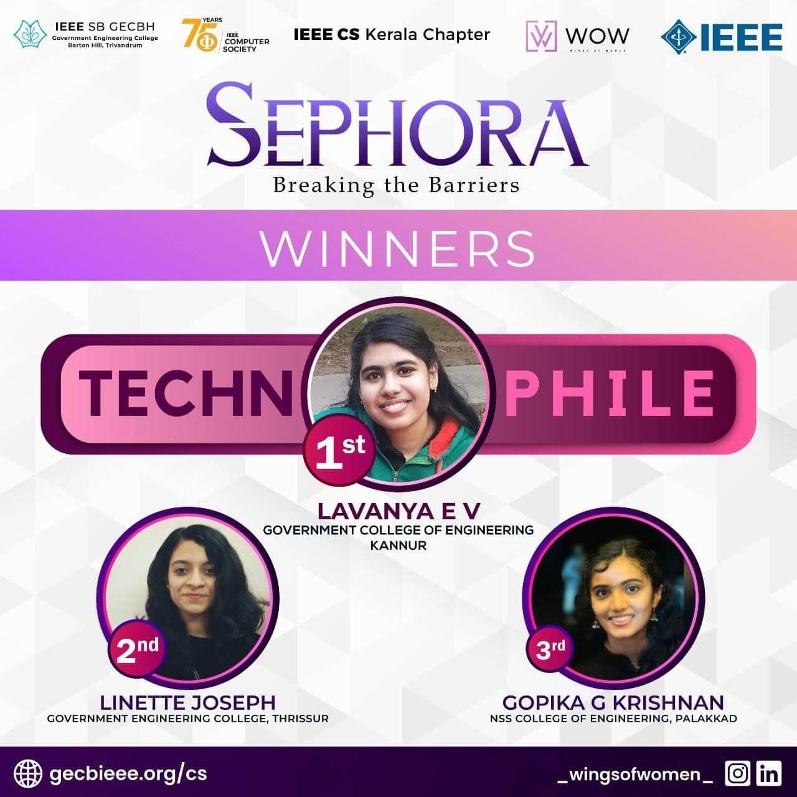
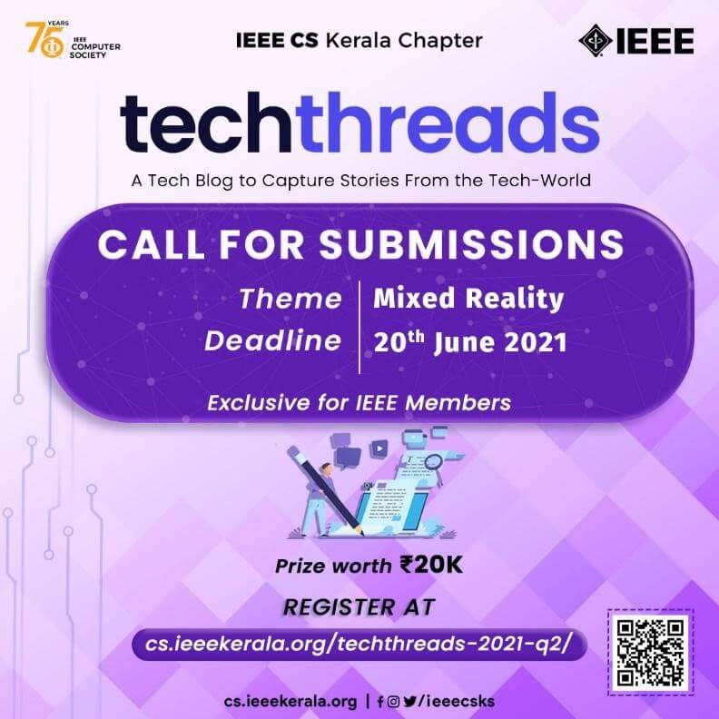
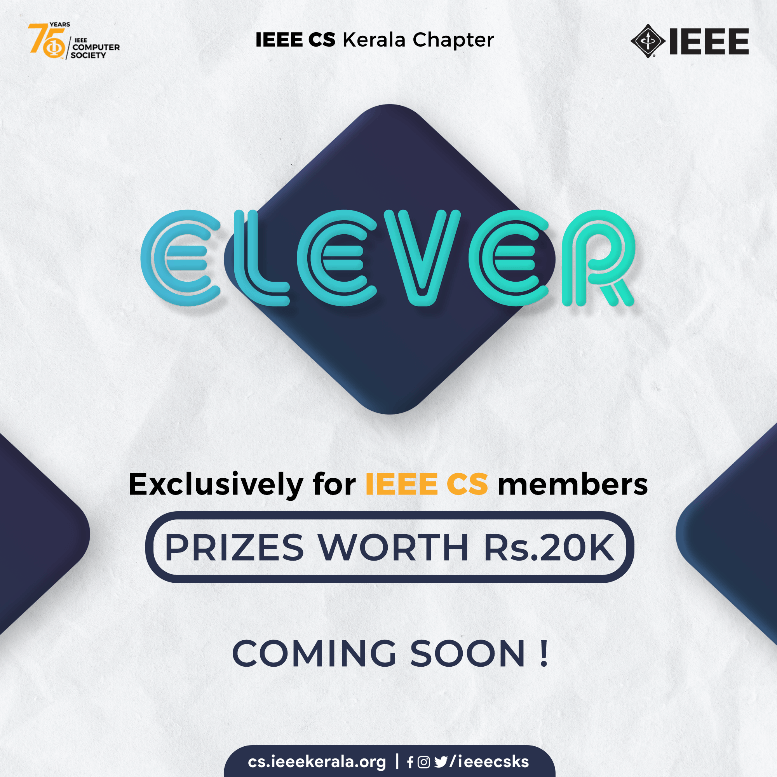

Updates From IEEE Computer Society Kerala Chapter
ESSAY Writing Competition
It was an exclusive online event for ladies, conducted by the IEEE Computer Society Kerala Chapter from the 31st of March to the 5th of April. The topic of the essay writing competition was “Gender Ratio in STEM: Absence in brilliance or invisible barriers?”. The registrations began on March 24th, 2021 and ended on March 30th, 2021. There were 39 participants for the event. The participants were made to submit their essays via a google form from which the best were selected. There was a cash prize of Rs. 700, Rs. 500 and Rs.300 for the first, second, and third place winners which were won by Raisa Anna Jose from the College of Engineering, Kallooppara, Sivaranjini P N from GEC Thrissur, and Amruta Anandan from RSET respectively.
Debate Competition
IEEE Computer Society Kerala Chapter conducted a debate competition from 9th to 11th April 2021 via Google Meet. It was a team event with each team comprising three members per team. 19 teams participated representing various colleges across Kerala. The theme was focused on technical backgrounds. There were 4 rounds: Filtration round, Preliminary, Semi-finals and Finals. Team Cetkrians from College of Engineering, Trikapur bagged the first place followed by Team 8096 from Govt. Model Engineering College and Team Callidus from MACE, Kothamangalam. The event was a grand success and the winners won prizes worth 2.7k.
Quiz Competition
This was an exclusive event for female students, held on the 11th of April. The topic for the quiz was “Computer, inventions, current affairs, technologies and women in computing”. The registrations were from the 2nd of April 2021 to the 9th of April 2021. A total of 65 students participated. The event happened online over Quizizz. There was a cash prize of Rs. 700, Rs. 500 and Rs.300 for the first, second, and third place winners which were won by Fathima Najiya from the College of Engineering, Vadakara, Naeema Ziyad from MACE Kothamangalam, and Jisha Joseph from RSET respectively.
Annual Chairs Meet 2021
The Annual Chairs Meet (ACM) 2021 was hosted by the IEEE CS Kerala Chapter on 17 April 2021. The new office bearers were introduced and decided that all events will be aligned with the IEEE CS 75th year anniversary celebrations. The event was well coordinated and discussed the conduction of future events. The best student volunteers for 2020 were announced. The winner are:
- Rohith Joseph Mathew - Rajagiri School of Engineering and Technology
- Saranya Krishnan M - Sree Chithra Thirunal College of Engineering, Trivandrum
- Mohamed Fawaz Imthiyaz - MEA Engineering College, Perinthalmanna
- Joel John Kandathil -Amal Jyothi College Of Engineering, Kanjirappally
The main initiatives from the Student Execom were run through Skill'D, a program for enhancement of Technical Skilling, Inter SB Collaboratory events, Instagram Challenge, IEEE Xtreme preparations, AKCSSC 21, Tech Threads and so on. Finally, the CS Chairs presented an incredible report on all the events and activities conducted in their respective student branches and thus it came to an end.
Meet the Scholars – 3
A delightful webinar, Meet the Scholars was organized on the 19th of April, 2021. This event was held to know and understand how GHC scholarships are impactful and to help the women in tech to excel in the field. Sudhi Awasthi, a software engineer intern, GHC'20 scholar, GHCI'20 scholar, Google SPS'20 began on the bright side with the powers taken by GHC. She motivated the audience to network with people who had the same tastes as her and indulge more in its activities. She mentioned the various eligibility criteria for the scholarship. The application contains two essays that Ms Sudhi recognises as a challenging part for the applicants as these make a strong remark on the approach put forward by you. She also had support from numerous aspects where she was guided and enlightened by their mentors. The mentors had encouraged her in every step and even assisted them in drafting the ideal application. The webinar concluded with her personal experiences on how she felt GHC had offered her. These few successes have made her into a better person and she feels that anyone among the young minds too can achieve it.
Talk with Scholars: REM Edition

An exultant webinar, Talk with Scholars was organized on the 24th of April, 2021. This event was held to felicitate the victorious students of the Computer Science branch for being awarded the prestigious Richard E Merwin award.
The event had begun on a good note of introducing the scholarship recipients and their respective colleges. The awarded participants included Neenu Chacko, Abhishek Sankar, Anagha N and Akash Nair. The webinar was used as a medium to elucidate the eventful journey of the recipients towards their victory. It shed light on their countless efforts, hard work and determination. The volunteers had indulged themselves in a series of tasks where they underwent reiterating events and programs one after the other. They shared their experiences in which they started small but grew big. Having been given the opportunity, the participants assisted fellow students in setting up their resumes and so on. In the wake of being an integral part of the course, they were serendipitous to gain countless influencers. Numerous aspects where the volunteers were guided and enlightened by their mentors were also mentioned. Their respective mentors had encouraged them in every step and even assisted them in drafting the ideal application. All in all, this webinar was a success which highlighted the concept of every little thing that counts. The live stream also had 400+ views. It’s the little things in each step of the journey that paves one’s way to success.
Webinar- Geospatial Data Science
IEEE Computer Society Kerala Chapter conducted the webinar in collaboration with Special Interest Group - Artificial Intelligence (SIG AI). The webinar was mentored by Mr Krishna Mohan P and it was conducted on 27 April 2021 virtually. The speaker delivered good insights on the topic of geospatial data science. The webinar covered the theories, concepts and applications that are specific to geographic data in the realm of data science. The event was very interesting and received good feedback from a whole lot of participants.
Sephora
SEPHORA: Breaking the Barriers was a multi-day, competitive event series, organized by IEEE Computer Society Women in Computing GEC Barton Hill, Trivandrum in collaboration with IEEE Computer Society Kerala Chapter and Exclusive Community Partner Wings of Women, on the overarching theme of Overcoming Hurdles in the Advancement of Technology through adversities. The event was free and exclusive to all female students and professional participants. An overwhelming amount of positive feedback was received for all events. SEPHORA: Breaking the Barriers consisted of the following standalone events: EXCELSIOR, DECODE, HUDDLE, FINESSE & EPITOME IEEE Computer Society Kerala Chapter is extremely delighted to announce the winners of the Sephora, competitive event series. First – Lavanya EV, Government College of Engineering, Kannur Second – Linette Joseph, Government College of Engineering, Thrissur Third – Gopika G Krishnan, NSS College of Engineering, Palakkad
TechThreads
TechThreads, a blogging initiative exclusively for IEEE members taken up by IEEE CSKS, brought in its second wave of wonderful and innovative blogs on a brand new theme, Mixed Reality. This is aimed at moulding the members in the world of creativity and expressing their views through the magic of words. The second phase registrations came to an end by 20th June 2021 and it fetched a high participation count of 49 members.
Elever
Elever is a remarkable leaderboard challenge between the Computer Society SBC's under the Kerala Chapter organized by IEEE Computer Society Kerala Chapter. It is exclusively for IEEE CS members giving them a chance to win prizes worth 20K. It consists of many tasks which are published on a bi-monthly basis on the official Instagram page of the IEEE CS Kerala Chapter. Currently, two tasks have been released that are Bug Hunt and Q-BITZ which were conducted on the 5th June 2021 and 4th July respectively. They both had prizes worth 1K and they were a great success with a 500+ registration count.
TechThreads Quarter 1 2021 - Top Picks
TechThreads Quarter 1 of 2021 has been recently concluded. The topic was 'Technology 2021 and beyond' and the blogging competition was conducted exclusively for IEEE Computer Society members. The top three picks are:

Rajagiri School of Engineering and Technology
Rajiv Gandhi Institute of Technology, Kottayam
Rajiv Gandhi Institute of Technology, Kottayam